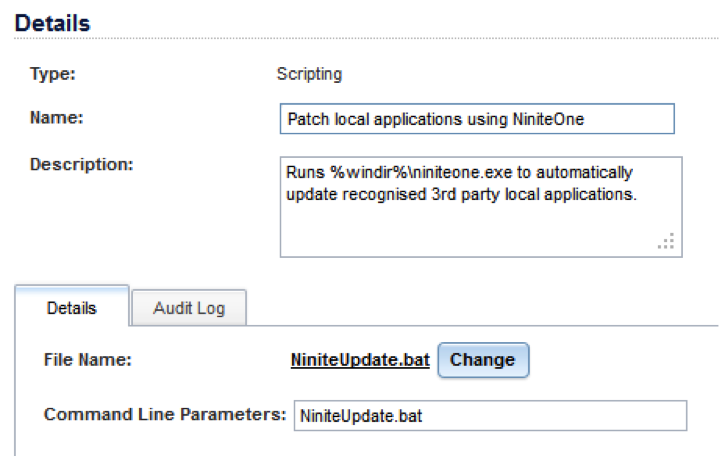
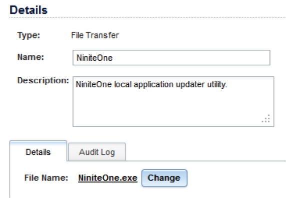
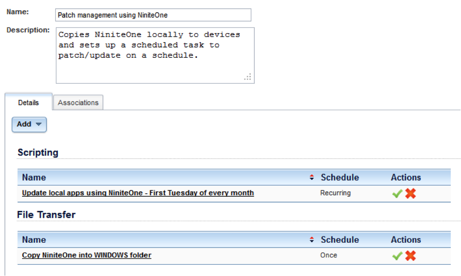
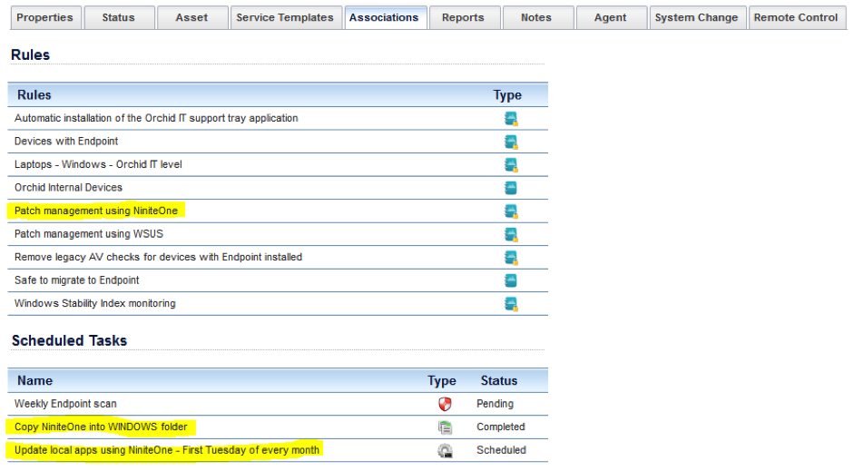

Tim Wiser of Orchid IT has kindly contributed some notes on using Ninite Pro with N-able.
This document covers the steps required to use NinitePro for updating managed devices within the N-central RMM product from N-able Technologies. After completing these steps you will have the ability to enable third party patch management on a customer-by-customer level. The patching process will occur at a time of your choosing on the first Tuesday of every month, aka “Patch Tuesday”. You can of course amend the schedule to suit your own needs.
Before you start, ensure that each site that you wish to use this on has domain administrator (or local administrator) credentials specified at the customer site level. Without these, the scheduled task will not run correctly due to a lack of permissions.
1. Launch Notepad and type the following lines:
@Echo off if NOT exist C:\WINDOWS\NinitePro.exe echo NinitePro.exe not found && exit /b 1 C:\WINDOWS\NinitePro.exe /nocache /silent . /updateonly /disableautoupdate
2. Save the file as NiniteUpdate.bat
3. From the SO level, click Configuration -> Scheduled Tasks -> Script/Software Repository
4. Click Add -> Scripting
5. Name the new scripting task Patch local applications using NinitePro
6. Upload the NiniteUpdate.bat file
7. Click OK

8. Click Add -> File Transfer
9. Name the task NinitePro
10. Upload the NinitePro.exe file
11. Click OK

12. From the SO level, click Configuration -> Scheduled Tasks ->Profiles
13. Click Add
14. Name the new profile Patch management using NinitePro
15. Underneath Details, click Add
16. Select Scripting
17. Set the task name to Update local apps using NinitePro
18. Set the Repository Item to be Patch local applications using NinitePro. This will populate the Filename and Command Line Parameters fields automatically
19. Set the schedule Type to be Recurring
20. Set the schedule Interval to be Monthly
21. Specify the time that you wish the patch process to start, and click Add
22. Set the Day of the Week to be Tue
23. Set the Week of the Month to be 1
24. Click the Save button. You will be returned to the Edit Scheduled Task Profile screen
25. Underneath Details, click Add
26. Select File Transfer
27. Set the task name to Copy NinitePro into WINDOWS folder
28. Set the Repository Item to be NinitePro
29. Click the Overwrite option
30. Set the Remote Location field to be C:\WINDOWS
31. Set the schedule Type to be Once
32. Increase the If the machine is offline at the specified time… option to be 30 days
33. Click Save

34. From the SO level, click Configuration -> Monitoring -> Rules
35. Click Add
36. Name the rule Patch management using NinitePro
37. Transfer the following filters; Laptops-Windows, Servers-Windows, Workstations-Windows
38. Click the Scheduled Task Profiles tab
39. Transfer the Patch management using NinitePro profile across
40. Click the Grant Customers/Sites Access tab
41. Transfer any customers who you wish to start patching with NinitePro
42. Click Save
After a short delay, you will see your Patch management using NinitePro rule associated with applicable devices. The rule will automatically copy the NinitePro.exe utility into the C:\WINDOWS folder on devices in preparation for the scheduled task that you defined to run.

Author: Tim Wiser, Orchid IT
Last updated 13 March 2012
Thanks Tim!
If you have other tips or feedback on using Ninite with N-able, please let us know. Thanks!
These features are only available in Ninite Pro Classic.
We're working on documentation for the new Pro web interface. For now the available help for that is inline in the interface.